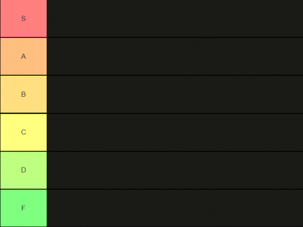

A tier list is a concept originating in video game culture where
playable characters or other in-game elements are subjectively ranked
by their respective viability as part of a list. Characters listed
high on a tier list of a specific game are considered to be powerful
characters compared to lower-scoring characters, and are therefore
more likely to be used in high-level competitive settings like
tournaments. With regards to online competitive Pokémon battles,
higher tier Pokémon are used more frequently since they objectively
outplay other Pokémon in terms of stats, movepool, abilities, type
combination etc. Usually, top tier list elements are considered as
"S-Tier", getting worse by moving on to "A-Tier", "B-Tier" [...]
alphabetically. In the example to the right, S-Tier elements are the
best while F-Tier elements are the worst. NOTE: This tier list
contains only three Pokémon each tier. To see the whole tier list,
visit
this page!
Click on the Pokémon to find a detailled in-depth guide.
SS-Tier
The current tier list from July 2023 contains an SS-Tier. Those
Pokémon are by far the best ones when it comes to single fights since
they outscale other Pokémon in this tier list by far. Not in every
tier list, there exist an SS-Tier, which is also known as "God-Tier".
Only the best of the best Pokémon can be found here. Current SS-Tier
Pokémon are:
A-Tier Pokémon still belong to the best Pokémon in the current meta
game, but don't belong to god tiers since they are slightly outscaled
in terms of stats and movepool. Additionally, they can be countered
easier than the higher tier Pokémon. Current A-Tier Pokémon are:
C-Tier Pokémon have major issues and drawbacks compared to the higher
tier Pokémon. There are only a few niche situations where to use them
properly. Current C-Tier Pokémon are:
There are also Pokémon considered as too strong due to their stats and
fighting capabilities. Those mostly legendary Pokémon are also called
"uber" and mustn't be used in competitive battles. Currently, four
Pokémon are banned for online fights: